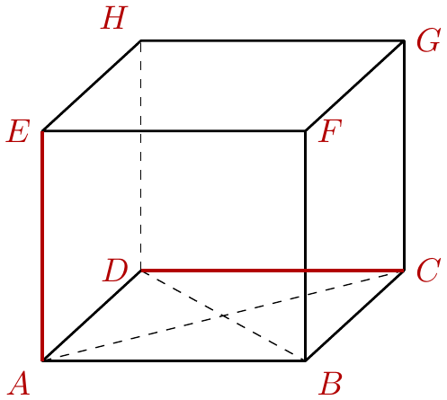
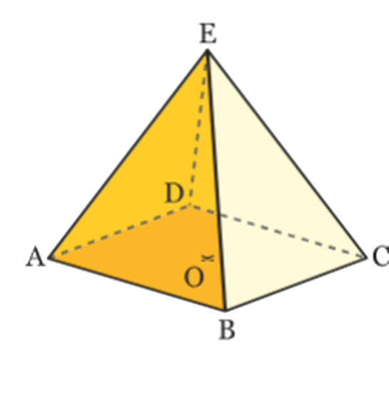
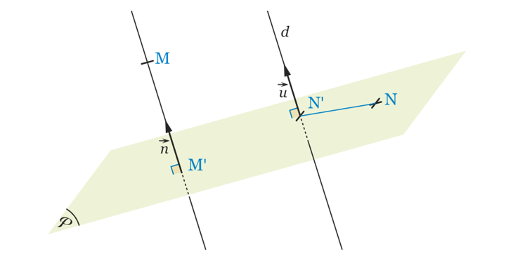
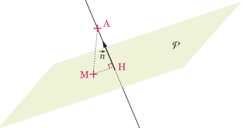
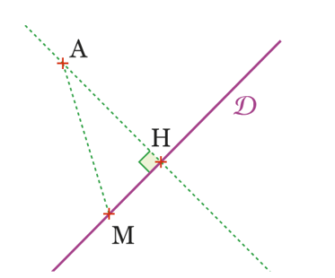

Cours
Terminale spécialité · Chapitre 13 — Géométrie analytique dans l'espace · cours de Frederik de Peyrelongue
Terminale spécialité — Mathématiques
Chapitre 13
Géométrie analytique dans l'espace
Orthogonalité, produit scalaire, équations de plans et distances
I. Orthogonalité
I.1 Définition
Deux droites sont dites orthogonales lorsque leurs parallèles respectives passant par un même point sont perpendiculaires.
Deux vecteurs non nuls sont orthogonaux lorsque les droites dirigées par ces vecteurs sont orthogonales.
Une droite est orthogonale à un plan lorsqu'elle est orthogonale à toutes les droites de ce plan.
Deux droites orthogonales ne sont pas forcément coplanaires.
Le vecteur nul est orthogonal à tous les vecteurs.
Dans un cube $ABCDEFGH$, les droites $(AE)$ et $(DC)$ sont orthogonales mais pas perpendiculaires : ces droites ne sont pas coplanaires.

Deux droites sont orthogonales si, et seulement si, leurs vecteurs directeurs respectifs sont orthogonaux.
Supposons que les droites $(d)$ et $(d')$ soient orthogonales. Par définition, il existe deux droites $(\Delta)$ et $(\Delta')$ respectivement parallèles à $(d)$ et $(d')$, passant par un point $A$, telles que $(\Delta)$ et $(\Delta')$ soient perpendiculaires. Comme deux droites parallèles ont les mêmes vecteurs directeurs, on en déduit que les vecteurs directeurs de $(d)$ et $(d')$ sont orthogonaux.
Réciproquement, considérons deux vecteurs orthogonaux. Alors il existe deux droites $(\Delta)$ et $(\Delta')$ dirigées par ces vecteurs et passant par un même point, qui sont donc perpendiculaires, et qui sont respectivement parallèles à $(d)$ et $(d')$.
L'intersection de deux droites perpendiculaires est nécessairement un point, alors que l'intersection de deux droites orthogonales peut être vide.
On considère une droite orthogonale à un plan. Tout vecteur directeur de cette droite est appelé vecteur normal au plan.
Une droite est orthogonale à un plan si elle est orthogonale à deux droites sécantes de ce plan.
$ABCDE$ est une pyramide à base carrée telle que les faces issues de $E$ (son sommet) soient des triangles isocèles. On note $O$ le centre du carré $ABCD$. Montrer que la droite $(EO)$ est orthogonale au plan $(ABC)$.

Correction. Comme les triangles $EAB$ et $EBC$ sont isocèles en $E$, on peut en déduire que $EA=EB=EC$, donc le triangle $EAC$ est isocèle en $E$.
Or $O$ est le milieu du segment $[AC]$, donc $[EO]$ est la médiane issue de $E$ du triangle $EAC$. Or la médiane est aussi la hauteur dans un triangle isocèle : ainsi $(EO)\perp(AC)$. De la même façon, comme $EBC$ est isocèle en $E$, on en déduit que $(EO)\perp(BD)$.
Par conséquent, $(EO)$ est orthogonale à deux droites sécantes du plan $(ABC)$, donc $(EO)$ est orthogonale au plan $(ABC)$.
I.2 Produit scalaire
Soient $\vec{u}$ et $\vec{v}$ deux vecteurs de l'espace. Lorsqu'ils ne sont pas nuls, on définit leur produit scalaire par
Lorsque l'un des vecteurs est nul, alors $\vec{u}\cdot\vec{v}=0$.
Dans un tétraèdre régulier $ABCD$ de côté $4$ cm :
Le produit scalaire est une forme bilinéaire symétrique :
Avec la propriété de symétrie, on obtient la linéarité à gauche, d'où la bilinéarité.
Soient $\vec{u}$ et $\vec{v}$ deux vecteurs non nuls. On pose trois points $O$, $A$ et $B$ tels que $\vec{u}=\vect{OA}$ et $\vec{v}=\vect{OB}$. On appelle $H$ le point de $(OA)$ tel que $(OA)$ soit perpendiculaire à $(HB)$. Alors :
On suppose que $H\in[OA)$ : le triangle $OAH$ est rectangle en $H$ et $\cos\left(\vect{OA}\,;\vect{OB}\right)=\dfrac{OH}{OB}$. D'où
Si $H\notin[OA)$, l'angle $\left(\vect{OA}\,;\vect{OB}\right)$ est obtus, alors $\cos\left(\vect{OA}\,;\vect{OB}\right)=-\dfrac{OH}{OB}$, d'où $\vect{OA}\cdot\vect{OB}=-OA\times OH$.
I.3 Orthogonalité et produit scalaire
Deux vecteurs $\vec{u}$ et $\vec{v}$ sont orthogonaux si, et seulement si, leur produit scalaire est nul.
Supposons que $\vec{u}$ et $\vec{v}$ soient orthogonaux. Si $\vec{u}=\vec{0}$ ou $\vec{v}=\vec{0}$, alors $\vec{u}\cdot\vec{v}=0$. Sinon, on a $\cos\left(\vec{u}\,;\vec{v}\right)=0$ et l'on en déduit $\vec{u}\cdot\vec{v}=0$.
Réciproquement, supposons que $\vec{u}\cdot\vec{v}=0$. Si $\vec{u}=\vec{0}$ ou $\vec{v}=\vec{0}$, alors $\vec{u}$ et $\vec{v}$ sont orthogonaux. Sinon, $\vec{u}\cdot\vec{v}=\|\vec{u}\|\times\|\vec{v}\|\times\cos\left(\vec{u}\,;\vec{v}\right)$ ; comme $\vec{u}$ et $\vec{v}$ ne sont pas nuls, leur norme non plus, on en déduit que $\cos\left(\vec{u}\,;\vec{v}\right)=0$, donc que les vecteurs $\vec{u}$ et $\vec{v}$ sont orthogonaux.
On considère un cube $ABCDEFGH$. Montrer que les droites $(BG)$ et $(EC)$ sont orthogonales.
- On décompose l'un des vecteurs à l'aide de la relation de Chasles de façon à ce que les expressions se simplifient ;
- On montre que le produit scalaire est nul.
$BFGC$ est un carré, ses diagonales sont donc perpendiculaires, donc $\vect{BG}\cdot\vect{FC}=0$.
La droite $(EF)$ est orthogonale au plan $(BCG)$, donc $\vect{BG}\cdot\vect{EF}=0$.
Finalement $\vect{BG}\cdot\vect{EC}=0$, d'où le résultat.
II. Géométrie analytique
II.1 Distance dans l'espace
Une base orthonormée est donnée par trois vecteurs $\vec{\imath}$, $\vec{\jmath}$ et $\vec{k}$ linéairement indépendants, de même norme $\|\vec{\imath}\|=\|\vec{\jmath}\|=\|\vec{k}\|$ et orthogonaux deux à deux :
Dans un repère orthonormé $\left(O\,;\vec{\imath},\vec{\jmath},\vec{k}\right)$, pour tout vecteur $\vec{u}\begin{pmatrix}x\\y\\z\end{pmatrix}$ et pour tous points $A\left(x_{A}\,;y_{A}\,;z_{A}\right)$ et $B\left(x_{B}\,;y_{B}\,;z_{B}\right)$ :
Dans un repère orthonormé $\left(O\,;\vec{\imath},\vec{\jmath},\vec{k}\right)$, pour tous vecteurs $\vec{u}\begin{pmatrix}x\\y\\z\end{pmatrix}$ et $\vec{v}\begin{pmatrix}x'\\y'\\z'\end{pmatrix}$ :
Dans un repère orthonormé, une équation de la sphère de centre $\Omega(a\,;b\,;c)$ et de rayon $R$ est :
Pour tout point $M(x\,;y\,;z)$ appartenant à la sphère, $\Omega M^{2}=R^{2}$, c'est-à-dire
II.2 Équation cartésienne du plan
L'espace est muni d'un repère orthonormé $\left(O\,;\vec{\imath},\vec{\jmath},\vec{k}\right)$.
On considère un vecteur $\vec{n}\begin{pmatrix}a\\b\\c\end{pmatrix}$ et un point $A\left(x_{A}\,;y_{A}\,;z_{A}\right)$.
Le plan qui passe par le point $A$ et de vecteur normal $\vec{n}$ admet pour équation cartésienne
Soit le plan $(P)$ d'équation $ax+by+cz+d=0$ ; alors le vecteur $\vec{n}\begin{pmatrix}a\\b\\c\end{pmatrix}$ est un vecteur normal de $(P)$.
Soit $P$ le plan d'équation $3x+2y-z=0$. Le vecteur $\vec{n}\begin{pmatrix}3\\2\\-1\end{pmatrix}$ est un vecteur normal de $P$.
Donner une équation cartésienne du plan passant par $A(1\,;1\,;1)$ et ayant pour vecteur normal $\vec{n}\begin{pmatrix}1\\-1\\1\end{pmatrix}$.
III. Distance d'un point à un plan
III.1 Projeté orthogonal
Le projeté orthogonal d'un point $A$ sur une droite $d$ ou un plan $(P)$ est le point d'intersection $H$ de la droite $d$ ou du plan $(P)$ et de la perpendiculaire à cette droite ou à ce plan passant par le point $A$.
$M'$ est le projeté orthogonal de $M$ sur le plan $P$ et $N'$ est le projeté orthogonal de $N$ sur $d$.

- on détermine un vecteur normal au plan $(P)$ ;
- on trouve une représentation paramétrique de la droite perpendiculaire au plan $(P)$ passant par $A$ ;
- on trouve le point d'intersection en résolvant le système d'équations entre la droite et le plan.
On considère le plan d'équation $3x-y+z-2=0$. Déterminer les coordonnées du projeté orthogonal du point $A(1\,;1\,;1)$ sur ce plan.
1) $\vec{n}\begin{pmatrix}3\\-1\\1\end{pmatrix}$ est un vecteur normal de $(P)$.
2) $\vec{n}$ est aussi un vecteur directeur de la droite $d$ passant par $A$ et perpendiculaire à $P$ :
3) On résout le système $(d)\cap(P)$ :
Donc $A'\left(\dfrac{8}{11}\,;\dfrac{12}{11}\,;\dfrac{10}{11}\right)$ est le projeté orthogonal de $A$ sur $(P)$.
III.2 Distance d'un point à un plan
Soient un plan $(P)$ de l'espace et un point $A$. La distance du point au plan est la plus petite des longueurs $AM$ où $M$ appartient à $(P)$.
Soit $H$ le projeté orthogonal de $A$ sur $P$ ; alors $d\left(A\,;(P)\right)=AH$.
Soit $H$ le projeté orthogonal du point $A$ sur le plan $(P)$ et $M$ un point de $(P)$ distinct de $H$.
La droite $(AH)$ est orthogonale au plan $(P)$, donc elle est orthogonale à toutes les droites du plan $(P)$, et donc à la droite $(MH)$.
Le triangle $AMH$ est rectangle en $H$ : d'après le théorème de Pythagore,
Comme $MH\neq0$, alors $AM>AH$. La distance $AH$ est donc la plus courte distance de $A$ à un point du plan $(P)$.

Calculer les coordonnées du projeté orthogonal $H$ du point $A(7\,;0\,;4)$ sur le plan $(P)$ d'équation $2x-y+3z+1=0$. En déduire la distance du point $A$ au plan $(P)$.
La droite orthogonale $d$ à $(P)$ passant par $A$ a pour vecteur directeur un vecteur normal à $(P)$, donc $\vec{n}(2\,;-1\,;3)$.
$d$ a alors pour représentation paramétrique :
\[ \begin{cases} x=7+2t\\ y=-t\\ z=4+3t \end{cases} \qquad t\in\R . \]Les coordonnées de $H$ vérifient le système de la droite $d$ et l'équation du plan $(P)$. En remplaçant les coordonnées de $H$ en fonction de $t$ dans l'équation de $(P)$ :
\[ 2(7+2t)-(-t)+3(4+3t)+1=0 \iff 14t+26=0 \iff t=-2 . \]On trouve, en prenant $t=-2$ dans $d$, les coordonnées du point $H(3\,;2\,;-2)$.
La distance du point $A$ au plan $(P)$ est alors :
\[ AH=\sqrt{(3-7)^{2}+(2-0)^{2}+(-2-4)^{2}}=\sqrt{56}=2\sqrt{14} . \]
Soit $\mathcal{P}$ le plan d'équation cartésienne $ax+by+cz+d=0$ et $A\left(x_{A}\,;y_{A}\,;z_{A}\right)$ un point. Si l'on note $\vec{n}$ un vecteur normal de $\mathcal{P}$ et $M(x\,;y\,;z)$ un point de $\mathcal{P}$, alors :
III.3 Distance d'un point à une droite
Soient une droite $(d)$ de l'espace et un point $A$. La distance du point $A$ à la droite $(d)$ est la plus petite des longueurs $AM$ où $M$ appartient à $(d)$.
Si l'on note $H$ le projeté orthogonal de $A$ sur la droite $(d)$, alors $d\left(A\,;(d)\right)=AH$.
Soit $M$ appartenant à $(d)$ différent de $H$ : alors $AHM$ est un triangle rectangle en $H$, donc $AM^{2}=AH^{2}+HM^{2}$, d'où $AM>AH$ et le résultat.
